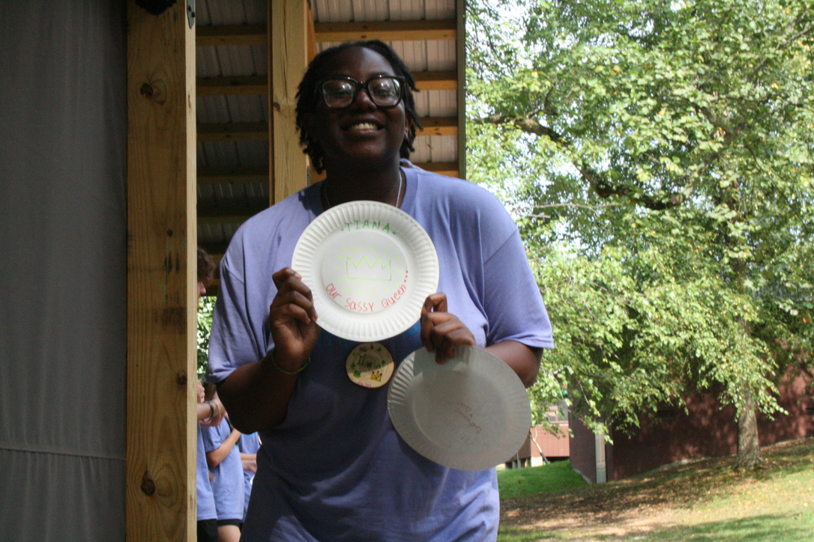

My Name is Neneh Burnside, I am a 20 year old University of Maryland student. I am a sophmore Phillip Merrill journalism student looking in Broadcast Journalism. For my career, I am intrested in anchoring mostly covering breaking news and entertainment. I got into journalism from being apart of my high schools broadcast team and anchoring the school news. Through my coursework and projects, I have developed skills in interviewing, multimedia storytelling, and photography. I am comfortable working both independently and in collaborative newsroon enviroments.